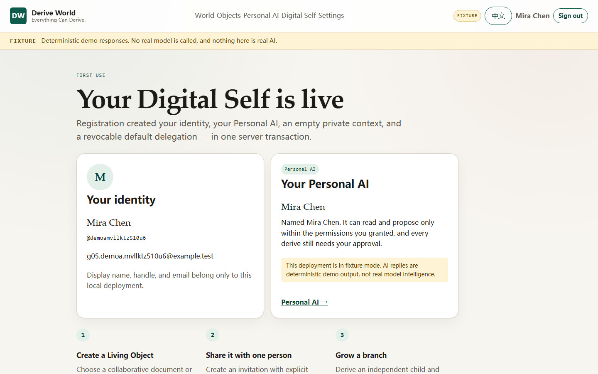
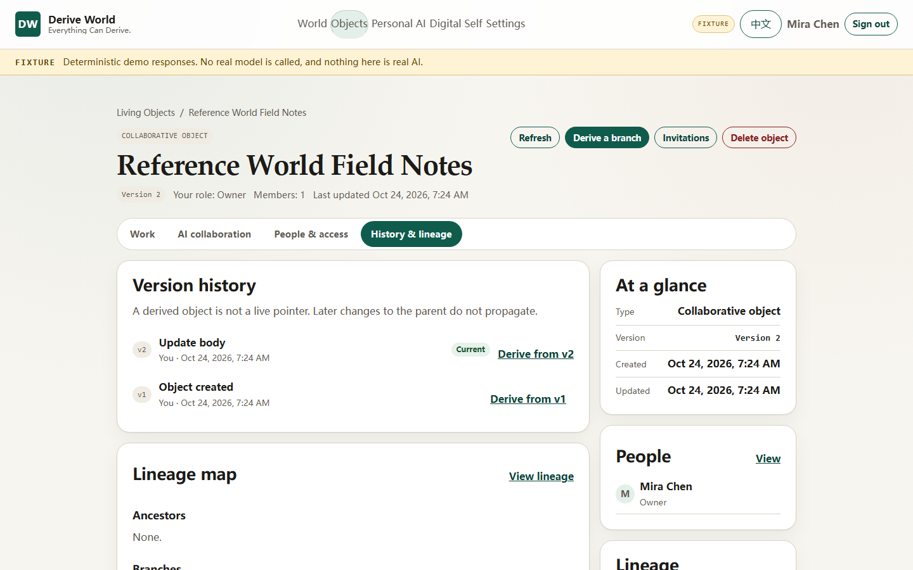
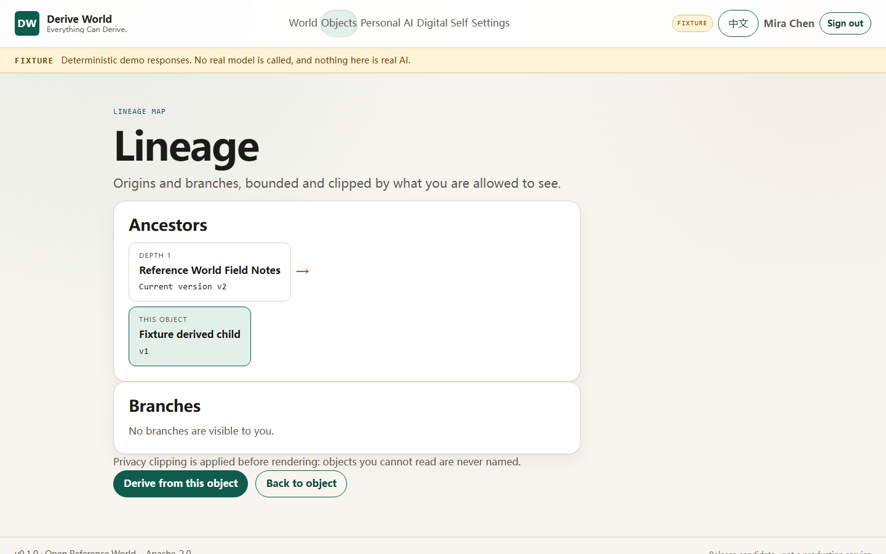
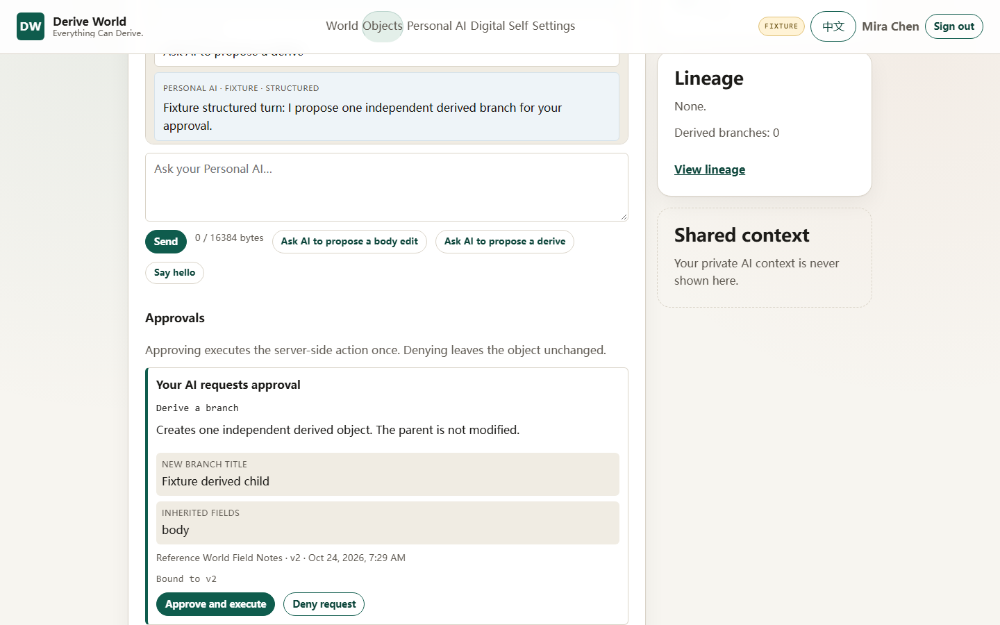

Step 1
Describe a world in your own words
The Personal AI writes a compact world brief; a server-side composer expands it into a real, runnable world. Nothing here is a fixed template or a category picker — the kinds of things, their relations and their interactions come from the description.
Fixture Screenshot taken from the reference product in deterministic demo mode.

Step 2
Change the world, and keep every version
A Living Object has versions, members, permissions and an event history. Each accepted change creates a version. You can revisit an older version without rewriting history.
Fixture Deterministic demo data; no model call.

Step 3
Derive an independent world, on purpose
A derive creates a child from an immutable snapshot of the source. Later edits to the parent do not propagate, and the child keeps a recorded ancestry. Try the small simulation: choose a source version and derive.
Simulated derivation
Simulation only. This page has no backend and creates nothing.
Simulation A visual model of the derivation rule, not a live AI service.

Step 4
The AI proposes. The human approves.
A Personal AI can propose a change or a derive. The proposal is inert until a person applies it, and a derive needs a separate, single-use confirmation bound to an object version. The AI never authorizes itself.
Fixture Scripted proposal and confirmation, not a model response.
